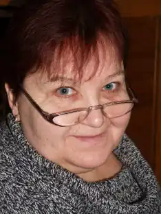

Оксана Іванівна Думанська народилась 25 січня 1951 року в с. Локня Кролевецького району Сумської області. Закінчила філологічний факультет Київського національного університету у 1973 році.
Член Національної Спілки письменників України з 2004 року.
Лауреат літературної премії ім. Дмитра Нитченка (2004). Першу книжку для дорослих "Ексклюзив" Оксана Іванівна написала в час свого "правдивого повноліття", відсвяткувавши п’ятдесятиріччя. Книга про студентські "київські" часи вийшла у львівському видавництві "Каменяр". Вона відразу привернула увагу читачів, стала літературною сенсацією. "Я випадкова письменниця", — каже про себе пані Оксана. Старт виявився легким. А потім її наче затягнуло у процес книготворення. Порівняно за короткий час вона зуміла підготувати і видати чимало творів для дорослих і дітей. У 2004 році виходить друком "Графиня з Куткора" — біографічна оповідь про нашу славну землячку, художницю Софію Караффу-Корбут. 2005 рік – повість для підлітків "Спосіб існування білкових тіл". Правда, письменниці здалося, що читача збиває з пантелику така назва, яка нагадує хімічне словосполучення. Тому, зберігши повністю первинний текст, вона дає повісті нове ім'я – "Школярка з передмістя". Отож, через 4 роки у видавництві "Світ Дитини" твір був перевиданий під новою назвою. У 2007 році в творчому доробку письменниці з'являється ще один твір "Романи на одну ніч"; 2008 рік – "Оповідки з жіночої торебки" — розповідь про наших сучасниць, ближчих і дальших, молодих і старих, більш і менш успішних, та перша книжка для наймолодших читачів "Бабусина муштра" — історія взаємин маленької дівчинки з бабусею. Згодом літературна агенція "Піраміда" започаткувала серію веселих детективів і обрала для втілення свого задуму авторку, зважаючи на її легке перо, дотепну мову і уміння створити сюжет. Отже, "Хроніка пригод Геня Муркоцького" від Оксани Думанської – своєрідний експеримент, оскільки зазначений жанр – небанальний детектив. Та педагогічна лінія життя не відпускає письменницю: згодом вона написала роман – колаж для родинного читання "Дитя епохи", в основу якого покладено реальні події з життя пересічних львів’ян. Загалом "Дитя епохи" — це такий собі лікнеп для початківця. Тут і особливі редакторські слівця, і деякі секрети творчої кухні, а то й просто універсальні поради мудрої жінки, як діяти в тій чи іншій життєвій ситуації. Письменниця переконливо доводить, що хоча в житті трапляються непрості ситуації, та навіть за притлумленими страхами, взаємними докорами й конфліктами поколінь завжди можна побачити щось важливе, заради чого варто видряпуватися з халепи. До слова, на зустрічах з письменницею батьки неодноразово дякували Оксані Іванівні за "педагогічну допомогу" в стосунках з дітьми. А вона цим романом дійсно хотіла об'єднати всі покоління шанувальників художнього слова. "Хай це звучить примітивно й банально, але культура читання і потребування книги здебільшого починається в родині. Жодними гучними акціями не примусиш людину полюбити цю інтимну дію – спілкуватися наодинці з персонажем. А якщо люди відвикатимуть від читання, то кому будуть потрібні письменники, видавці, книгорозповсюдники?" — зазначила в одному із своїх інтерв’ю Думанська. Письменниця любить малювати яскраві характери на тлі суспільного життя. Їі персонажі – різні, живі, у неповторній палітрі цікавих деталей— знахідок, просто дихають життям. Вона вважає, що книжка не може народитися на якійсь абстракції, а тільки на "живому" матеріалі. Як-ось книжка "Куди зникає час…", що вийшла наприкінці 2009 року у видавництві "Світ Дитини". Це історія про долю митця, українського художника Андрія Ментуха, який у важких умовах вистояв, досяг життєвих висот, зумів розкрити свій талант. 2012 року у видавництві "ВК АРС" виходить книга "Три грації або Дві Оксани з Любов'ю". Співавторки — Любов Долик, Оксана Думанська, Оксана Кришталева. Дві Оксани з Любов’ю зібрали під однією обкладинкою свої оповідання про те, що бачать, чим живуть, до чого схиляються серцем, з чим не погоджуються, на що сподіваються. Авторки різні у виявленні стилістичних уподобань – і тим цікавіше читачеві гортати сторінки… Цікаво спілкується пані Оксана у творах з найменшим читачем. Вона переконана: "Дітей треба любити в міру… Якщо любити, то не до фанатизму. Якщо карати, то не до істерики", — адже є щасливою бабусею чотирьох прекрасних онуків, мамою, порадницею і подругою трьох дорослих вже дітей. Оксана Іванівна вміє писати, граючись, зацікавлюючи дітей реально-вигаданими історіями, героями-тваринами, що вміють розмовляти поетичною мовою. Свідченням цьому є розповідь про "Собаче життя кота Хитруна" (2011), який, либонь, став найвідомішим котом у Львові, його портрет авторства Мар'яни Петрів зображено на горнятках. У 2013 році побачили світ книги "Принцеса Горошинка" і "Попелюшка в домашніх капцях". Редактор журналу "Світ Дитини" Наталя Скосарева розповіла, що ці казки спочатку були надруковані у дитячому журналі, а потім, як окремі видання, стали початком проекту "Казки від Світика". 2015 року у Видавництві Старого Лева вийшло з друку нове видання письменниці "Марійчині пригоди" про життя маленької дівчинки, для якої кожна подія стає визначною… Як перекладач Оксана Думанська багато років співпрацює з видавництвами "Махаон-Україна", "Свічадо" та "Світ Дитини". Серед найбільш відомих її робіт переклад повісті Миколи Гоголя "Тарас Бульба". Також український читач, завдяки Думанській, має тепер нагоду познайомитися зі світовою знаменитістю Люком Бессоном, який написав казку "Артур" про 10-літнього хлопчика, що потрапив у паралельний світ. А з російської мови Оксана Іванівна переклала ряд оповідань, історій, казок, за мотивами яких були зняті улюблені мультики для дітей. В літературному опрацюванні письменниці вийшли в 2008 році історична повість Зінаїди Левицької "При битій дорозі", 2010 – роман для юнацтва Василя Короліва-Старого "Чмелик", 2014 – переклад книги сучасниці Зої Казанжи "Якби я була" — це "подорож історіями багатьох людей, яких ви знаєте чи не знаєте, про яких ви чули з випадкових розмов, яких бачили по телевізору, деякі історії навіть можуть виявитися вашими власними. Бо таке життя…" Науковці Львова знають пані Оксану як керівника авторського колективу монографій "Іван Тиктор. Талан і талант" (2007) – першої розвідки про найзнаменитішого українського видавця та "Я сіяв те, що Бог послав..." (2009) — про Павла Чубинського. 2014 рік. У видавництві "Піраміда" вийшла нова антологія "Львів, львів’янки, любов". Як упорядник видання Оксана Думанська зазначила: "Усі авторки, де б вони зараз не мешкали, так чи інакше пов’язані зі Львовом. Тексти третини із них – взагалі дебют... "Львів, львів’янки, любов" – це якраз та жіноча і жіночна проза, яка зараз потрібна, аби про наше місто знали якомога більше – не тільки по Форуму видавців, а й по автурі, котра тут присутня і на яку потрібно звертати увагу видавцям". Червень 2015 року. Відомі львівські екскурсоводи Петро та Іван Радковці презентували свою книгу "Таємниці львівських левів". Літературний редактор видання Оксана Думанська зазначила: "Я бажаю щастя цій книзі…, тому що розумію – кожен, хто має в сім’ї дітей, повинен мати цю книгу, для того, щоб читати її вранці, в обід, ввечері чи коли дитина попросить. Я більш ніж впевнена, що в тих сім’ях, де є діти, ці казки та легенди переповідатимуть дорослим". А відкриттям, посвятою 2015 року і ХХІІ Форуму видавців у Львові стала книга "Шептицький від А до Я" (Видавництво Старого Лева). Серед колективу авторів, які працювали над виданням, і Оксана Думанська. У неї багато задумів, багато проектів. "Час – це коли працюю, перекладаю. Відпочинок – коли пишу те, що відклалося у голові,— якось відмітила в одному з останніх інтерв'ю письменниця. — Себе вважаю жабою, яка вигулькнула на грудці масла. Ніколи не ображаюся. Я вже склала собі ціну. Не захмарну". Книги Оксани Думанської Думанська, О. І. Бабусина муштра / О. І. Думанська ; худож. оформл. О. Микули. — Львів : Піраміда, 2008. — 54 с. Думанська, О. І. Бабусині вірші : для мол. шк. в. / О. І. Думанська ; ілюстр. М. Петрів. — Львів : АРС, 2013. — 24 с. : іл. — Книга з автографом. Думанська, О. І. Графиня з Куткора : біогр. оповідь з голосів самовидців / О. І. Думанська ; худож. оформл. І. Шутурми. – Львів : Каменяр, 2004. — 127с. : 8л. іл., фотоіл. Думанська, О. І. Дитя епохи / О. І. Думанська. — Львів : Піраміда, 2009. — 118 с. : іл. Думанська, О. І. Дитя епохи : роман-колаж для сімейного читання / О. І. Думанська. — Львів : АРС, 2012. — 114 с. : іл. — Книга з автографом. Думанська, О. І. Ексклюзив : роман, повість / О. І. Думанська ; худож. оформл. М. Шутурми. — Львів : Каменяр, 2002. – 179 с. : іл. Думанська, О. І. Зубчик для феї / О. І. Думанська ; худож. М. Петрів. — К. : Дитяча християнська література, 2012. — 16 с. : іл. Думанська, О. І. Куди зникає час... / О. І. Думанська. – Львів : Світ Дитини, 2009. — 120 с. Думанська, О. І. Марійчині пригоди / О. І. Думанська ; худож. М. Петрів. – Львів : Видавництво Старого Лева, 2015. – 72 с. : іл. Думанська, О. І. Mrs. Dalloway: українська версія : (Сюжет одного дня) / О. І. Думанська. — Львів : АРС, 2012. — 99 с. Думанська, О. І. Оповідки з жіночої торебки / О. І. Думанська ; худож. О. Микула. — Львів : Піраміда, 2008. — 127 с. : іл. Думанська, О. І. Принцеса Горошинка : для дошк. та мол. шк. в. / О. І. Думанська ; худож. М. Петрів. — Львів : Світ Дитини, 2013. — 12 с. : іл. — (Казки від Світика). Думанська, О І. Попелюшка в домашніх капцях : для дошк. та мол. шк. в. / О. І. Думанська ; худож. М. Петрів. — Львів : Світ Дитини, 2013. — 12 с. : іл. — (Казки від Світика). Думанська, О. І. Романи на одну ніч / О. І. Думанська ; худож. оформл. Д. Конюхова. – Львів : Піраміда, 2007. — 95 с.: іл. Думанська, О. І. Спосіб існування білкових тіл : щоденник, записаний з уяви / О. І. Думанська. – Львів : Піраміда, 2005. — 83 с. : іл. Думанська, О. І. Хроніка пригод Геня Муркоцького : небанальний детектив / О. І. Думанська ; фотогр. Р. Костенка. – Львів : Піраміда, 2009. — 224 с. Думанська, О. І. Школярка з передмістя : щоденник, дописаний з уяви / О.